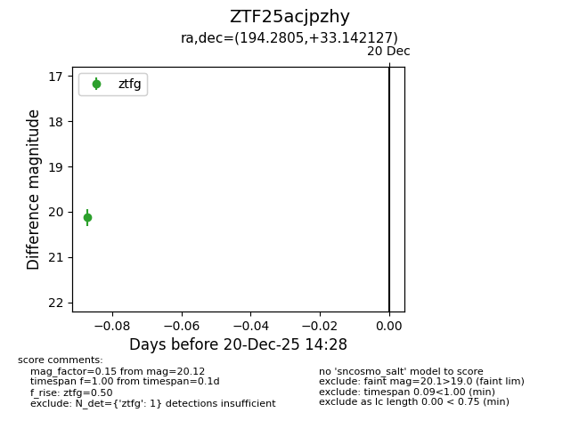
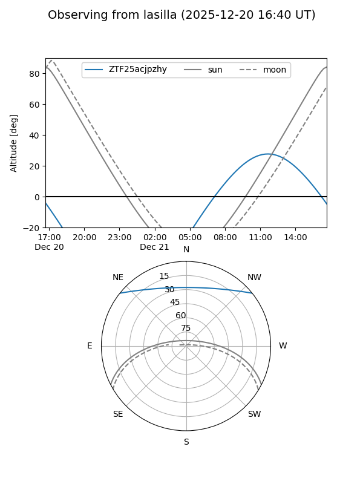
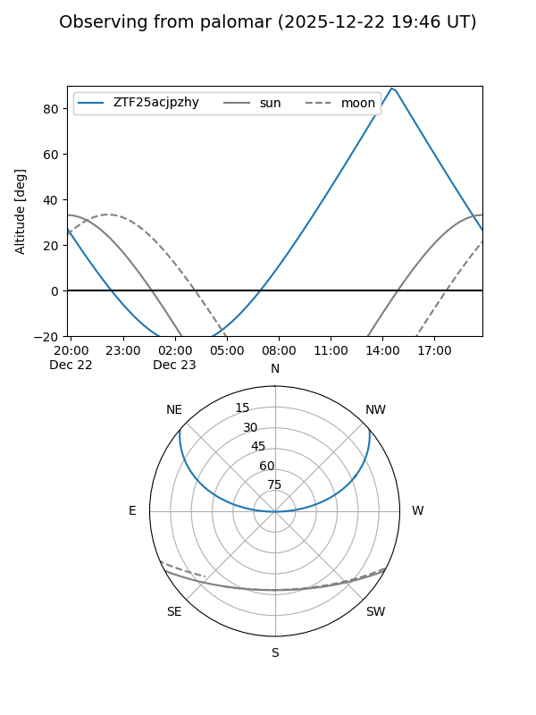
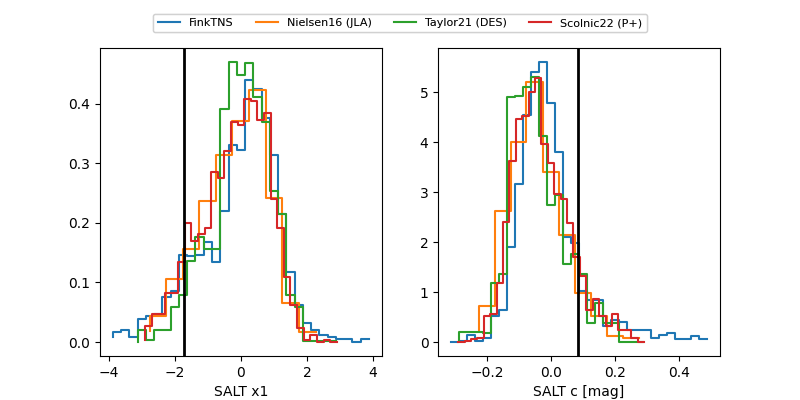

ZTF25acjpzhy
Target ZTF25acjpzhy at 2025-12-22 14:31
Aliases and brokers:
FINK: fink-portal.org/ZTF25acjpzhy
Lasair: lasair-ztf.lsst.ac.uk/objects/ZTF25acjpzhy
ALeRCE: alerce.online/object/ZTF25acjpzhy
alt names
ZTF25acjpzhy (ztf,fink_ztf)
Coordinates:
equatorial (ra, dec) = 194.2805,+33.14213
equatorial (HMS+DMS) = 12:57:07.32,+33:08:31.66
galactic (l, b) = (111.7338,+83.86207)
Flags:
Photometry:
last ztfg=20.12
1 ztfg detections
Lightcurve

Visibility


Additional plots
